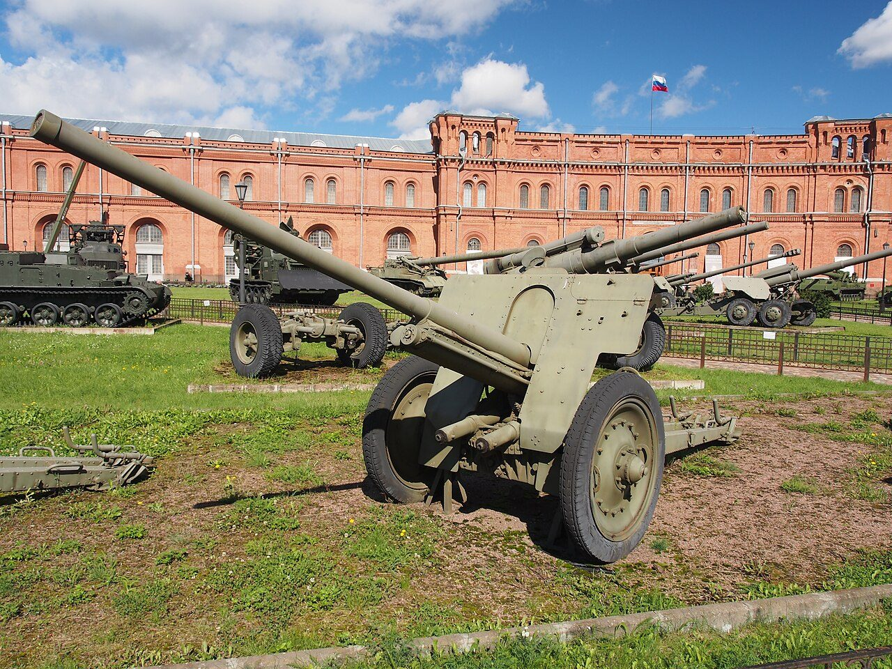

артиллерист · 20 лет · 1941 · Сокольничи
Николай Сиротинин
Один парень. Одна пушка. Уничтожил 11 танков, 7 бронемашин и 57 солдат.
немцы отдали честь на похоронах этого героя
Один парень. Одна пушка. Уничтожил 11 танков, 7 бронемашин и 57 солдат.
Июль 1941 года. 13-я армия отходит на восток, а по Варшавскому шоссе на Кричев рвётся немецкая колонна. У деревни Сокольничи дорога переходит реку Добрость — единственный мост на участке. Кто удержит его два часа, тот спасёт отходящий полк. Следи по карте.
Когда прозвучал приказ отступать, он не ушёл — вызвался остаться один, с одной 76-миллиметровой пушкой. Старшему сержанту Николаю Сиротинину было двадцать лет. 17 июля 1941 года у деревни Сокольничи под Кричевом он встал у моста через Добрость, чтобы прикрыть отход полка.
Первым выстрелом он подбил головной танк колонны, вторым — замыкающую машину. Колонна 4-й танковой дивизии встала на Варшавском шоссе: вперёд не пройти, назад не свернуть.

Около двух часов он вёл бой, и противник не мог понять, что орудие одно. Когда снаряды кончились, он отстреливался из карабина до последнего патрона. Сдаться отказался.
Итог боя, который называют каноническим: одиннадцать танков, семь бронеавтомобилей, пятьдесят семь солдат противника. По той же версии, немецкие офицеры отдали честь его похоронам — жест уважения к врагу, который не отступил.
Что здесь история, а что досказано после, — спорят. Но суть одна, и она не зависит от числа: двадцать лет, один ствол, и выбор не сдаться.
Главный письменный след о подвиге — запись, приписываемая дневнику обер-лейтенанта Фридриха Хенфельда (4-я танковая дивизия). Немецкий оригинал не найден, подлинность записи документально не подтверждена. Ниже — её пересказ.
«17 июля 1941. Сокольничи, под Кричевом. Вечером хоронили неизвестного русского солдата. Он один стоял у пушки, долго расстреливал колонну танков и пехоты, так и погиб. Все удивлялись его храбрости…
Оберст перед строем сказал: если бы все солдаты фюрера дрались, как этот русский, мы завоевали бы весь мир. Трижды стреляли залпами из винтовок. Всё же он русский — нужно ли такое преклонение?»
Один человек с одной 76-мм пушкой против колонны 4-й танковой дивизии — соединения, которое привыкло брать города. И колонна не смогла пройти два часа.
Плотность огня была такой, что противник был уверен: по нему работает целая артиллерийская батарея. А стрелял один человек, у одной пушки.
Июль 1941 года. Ты — наводчик орудия у моста через Добрость. Пришёл общий приказ отступать, а по шоссе уже идёт колонна. Дома в Орле ждут мать и сестра. Что делаешь?
Сиротинин — реальный человек, чьё имя установили не сразу. О том, что известно точно, а о чём источники расходятся, говорим прямо.
Николай Владимирович Сиротинин родился 7 марта 1921 года в Орле. Погиб 17 июля 1941 года у деревни Сокольничи под Кричевом. В 1960 году посмертно награждён орденом Отечественной войны I степени.
Источники называют часть, где служил Сиротинин, по-разному; наиболее вероятна 137-я стрелковая дивизия. Имя героя установили не сразу: его восстановили по дневнику немецкого офицера и свидетельствам местных жителей, во многом благодаря краеведу Михаилу Мельникову и Ольге Вержбицкой.
В июле 1941 года у моста через Добрость был бой, задержавший продвижение противника. И был человек, который остался один и не сдался. Память о нём — обелиск и 76-мм пушка на постаменте у Сокольничей (1961), улицы в Кричеве и Орле.
Тяни ленту вбок — увидишь, что происходило параллельно с подвигом.
Германия нападает на Советский Союз. Начинается Великая Отечественная война — самая кровавая в истории страны.
Июль—сентябрь 1941: одно из первых крупных сражений войны. Оно задерживает наступление на Москву на два месяца.
Танковые дивизии вермахта, ещё вчера считавшиеся непобедимыми, идут через Белоруссию — туда, где у моста через Добрость их ждёт один человек.
Справочник по источникам о бое у моста через Добрость. Ответы — только из документов и оговорённых версий, ничего выдуманного.
Ответы сформированы на основе документальных источников.
Каждый подсвеченный день — человек или отряд, который не сдался. Нажми на число — увидишь имя и хук.